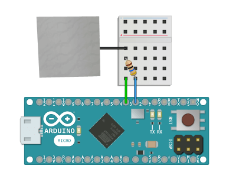

Components
Sensors
Additional Libraries
Detect human presence and touch from behind several millimeters of material, or detect change in water levels from the outside of a plastic container. This library is meant to help determine change in relative capacitance for the reasons above, and not for calculating exact capacitance.
Relative capacitance is found by measuring how long it takes for an Arduino send-pin to charge a receive-pin to HIGH (in microseconds). Changes in the electrical field around a sensor connected to the receive pin (such as a human passing by, or water filling up, or a motor turning on) have a measurable impact on the amount of time it takes to charge the receive pin.
Many of these charge and discharge readings are taken, then averaged within the library to reduce variability and give a more clear answer of what the sensor is reading. This is done without delay so it only has a small impact on the main loop() performance. See the Example below for help wiring and programming the Arduino with this library.
This library is part of a larger package that you can download to access all of the documented sensors, or you can use this library by itself.
- Download Capacitance Library v1.0.4 .zipby itself, or
- Download All Sensor Libraries with this library included, or
- View Source on GitHub with MIT license
- Connect Arduino digital pin 2 to a 10MegΩ resistor
- Connect the other end of the 10MegΩ resistor to Arduino digital pin 3
- Connect Arduino digital pin 3 to a piece of conductive material (aluminum foil)
- Cover the conductive material with non-conductive material (tape)
- Load the Example Sketch onto the Arduino
- Open a serial connection at 115200 baud to see the reported values
- Touch or move your hand by the sensor

Sensitivity is how far away the sensor can detect things, or how much resolution you have to recognize change in the sensor readings.
- Increase Sensitivity by either adding more resistors in series (20Meg, 30Meg, or more), or increase the surface area (size) of the piece of aluminum used as the sensor.
- Decrease Sensitivity by either lowering the amount of resitance (use only 1Meg or less), or decrease the surface area (size) of the piece of aluminum used as the sensor.
Variability is how wildly the sensor readings fluctuate. This library helps adjust the variability by taking a moving average of many readings over time. This is done without delay so it has little impact on the main loop() performance.
- Less Variable readings that don't fluctuate so quickly can be achieved by increasing the sample size: setSampleSize(1000).
- More Variable readings that fluctuate quickly can be achieved by decreasing the sample size: setSampleSize(10).
You must continuously call update() inside of loop() in order to use theReal-Time methods tagged below.
- constructor(send_pin, receive_pin)
- .setSampleSize(value)
- .update()

- .start()Real-Time
- .isFinished()Real-Time
- .getValue()Real-Time
- .onChange()Real-TimeEvent
Create a new capacitance sensor and pass in the Arduino pin numbers for the send and receive pins.
EXAMPLE SKETCH
Pass in an integer to change the number of readings taken to calculate a moving average getValue(). This can be called inside of setup() or also safely at runtime inside of loop().
- Decrease Variation in readings by making this number larger: 1000
- Increase Variation in readings by making this number smaller: 10
- Default Value: 100
EXAMPLE SKETCH
This must be call continuously from within the loop() to move the library along in real-time.
EXAMPLE SKETCH
Begin taking many readings and start adding up the moving average for getValue().
EXAMPLE SKETCH
Returns true if all readings have been taken and a moving average getValue() is ready. You must first call start() to begin the sampling process.
EXAMPLE SKETCH
Returns an unsigned long of the moving average value for the capacitance reading (microseconds taken to charge the pin). This will only return a value after calling start() and waiting until isFinished() has returned true.
EXAMPLE SKETCH
This method will fire a single event and start taking another sensor reading each time the getValue() changes, mimicking the same process of creating a loop by calling start() and isFinished() together, but with a simple syntax and a tighter time loop.